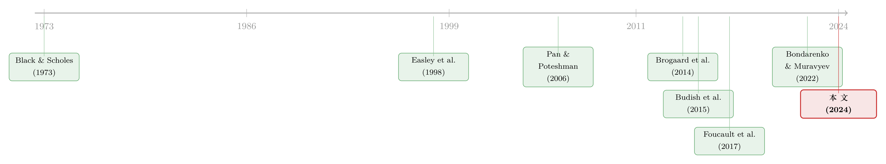

你以为高频交易只搅动了股票，其实它在期权里收了一笔「过路费」
本文读的是 Nimalendran, Rzayev & Sagade (2024, Journal of Financial Economics)：股票市场里的高频交易 (high-frequency trading, HFT) 越凶，写在这些股票上的期权，买卖价差 (bid–ask spread) 就越宽。一个标准差的 HFT 活动上升，对应期权相对价差高出 3.5%。而且这笔账，只由「抢流动性」的激进型 HFT 买单，与「供流动性」的做市型 HFT 无关。
1 引言：一道被忽略的「跨市场」账单
关于高频交易，过去十几年的文献已经吵得很热闹了。它到底是让市场更好还是更坏？支持的一方说，速度快的人能更快地更新报价、更好地管理逆向选择，于是价差变窄、流动性变好（Brogaard et al., 2014, 2015）；反对的一方说，速度快的人会去「狙击」那些还没来得及撤掉的陈旧报价 (stale quotes)，把做市商当韭菜割，于是制造出一种「有毒的」时延套利 (latency arbitrage)（Budish et al., 2015; Foucault et al., 2017）。
但你有没有注意到，这场争论几乎全部发生在同一个市场内部——HFT 搅动股票市场，我们就去看股票市场的流动性变好还是变坏。可现实里，资产之间是连着的。一只股票，和写在它身上的期权，本就是同一个标的的两副面孔。那么一个非常自然、却几乎没人正面回答过的问题是：
股票市场里的高频交易，会不会顺着这根「脐带」，跑到期权市场里去收一笔账？
这正是本文要做的事。作者直截了当地给出了答案：会，而且收得不轻。一个标准差的 HFT 活动上升，期权的相对买卖价差就要高出 3.5%。换算成钱：一笔 1000 张合约的交易，成本会从 USD 85.91 涨到 USD 88.92。单看一笔似乎不多，但 2023 年全美期权成交量已经摸到 10.1 billion 张合约，把这点增量乘上去，一年凭空多出来的交易成本大约是 USD 30.4 million。
这里有个反直觉的地方值得先记住：变贵的不是 HFT 直接参与的那个股票市场，而是隔壁的期权市场。HFT 在 A 屋子里加速，账单却递到了 B 屋子里那些卖期权的做市商面前。本文真正想讲透的，就是这条「脐带」到底是怎么把成本从股票市场传导到期权市场的。
2 把 HFT 拆开看：是谁在收这笔账？
要讲清楚这个故事，第一步得先把「HFT 活动」这个笼统的词拆开。这是本文很关键、却容易被一带而过的一步。
本文的主力数据是一份很特别的 NASDAQ HFT 数据：NASDAQ 把每一笔交易，按发起方是不是高频交易者，做了拆分。更细的是，每一笔成交的供需两侧都被打了标签——H 代表 HFT，N 代表非 HFT，于是每笔交易落在四个格子里：HH、HN、NH、NN（前一个字母是流动性需求方/主动方，后一个是流动性提供方/被动方）。
顺着 Brogaard et al. (2014) 的做法，作者把它们重新拼成三个量：
- 抢流动性的 HFT（liquidity-demanding）：
SHFTD = HH + HN——HFT 作为主动方去吃掉别人的报价； - 供流动性的 HFT（liquidity-supplying）：
SHFTS = HH + NH——HFT 作为被动方挂单做市； - 总的 HFT 活动：
SHFTAll = HH + HN + NH。
这份数据本身就足够说明 HFT 在股市里的分量：样本里总成交约 44,800 million 股，其中 HFT 沾边的就有 31,968 million 股，占了 71.30%，对应的成交金额是 1381 billion 美元。HFT 早已不是边角料，而是市场的主体。
接着把它对上期权。期权这边用的是 OPRA（Options Price Reporting Authority）的逐笔交易数据，初始有 19,143,237 笔。本文的被解释变量是期权的相对买卖价差 OPspread，按成交量加权平均的「(卖价 − 买价) / 中间价」。
基准回归长这样（请注意，这就是论文中的原始设定，式 (1)）：
$$ OPspread_{i,d} = \alpha_i + \beta_d + \gamma_1\, SHFTAll_{i,d} + \sum_{k=1}^{8} \delta_k\, C_{k,i,d} + \varepsilon_{i,d} $$
这里 \(\alpha_i\) 和 \(\beta_d\) 分别是股票（个体）和日期（时间）的固定效应 (fixed effects)，把「某些股票天生价差宽」「某天全市场都紧张」这类东西吸收掉；\(C_{k,i,d}\) 是一组 8 个控制变量,既有期权侧的（成交量 Ovolume、隐含波动率 Oimplied、期权价格的倒数 Oinp、绝对 delta |Odelta|、Ogamma、Ovega），也有股票侧的（股票相对价差 SPspread、已实现波动率 SVolatility）。换句话说，所有「教科书上会影响期权做市商对冲成本」的因素，作者都先摁住了，再去看 HFT 还剩下多少独立的解释力。
这一步很重要，因为它直接堵住了一个最常见的反驳——「会不会只是股票流动性差，连累了期权？」SPspread 已经在控制变量里了。结果是：在所有这些控制之后，HFT 的系数依然显著为正。而且当你把 SHFTD（抢流动性）和 SHFTS（供流动性）分开放进去，正向效应几乎全部来自抢流动性的那一支。做市型 HFT 不背这个锅。
于是问题就被逼到了墙角：为什么偏偏是「抢流动性」的 HFT，会让期权变贵？ 本文给了两条机制。
3 第一条机制：时延套利，狙击的是期权做市商的「陈旧报价」
先说第一条，作者称之为时延套利渠道 (latency arbitrage channel)。
它的逻辑是这样的。期权和股票之间有一条铁律——买卖权平价 (put–call parity)。给定标的股价、行权价、利率，看涨期权和看跌期权的价格必须满足一个无套利关系。一旦股价动了，期权的「应有价格」也跟着动。
问题在于，期权做市商更新报价是有摩擦的——交易所对报价更新次数有上限，对「报价/成交比」过高的交易者还要罚款 (Muravyev and Pearson, 2020)。这意味着，当股价突然一跳，期权做市商挂在那里的报价会有一瞬间是陈旧的，没来得及跟着平价关系调整。
而手握速度优势的激进型 HFT，恰好就盯着这种瞬间。它在股票市场抢先一步反应，然后回头去期权市场，按那个还没更新的旧报价成交——这就是一次买卖权平价违约 (put–call parity violation) 的套利。被狙击的期权做市商，等于做了一笔注定吃亏的买卖。
这正是市场设计文献里讲的「军备竞赛」：Budish et al. (2015) 论证了连续竞价市场天然会孳生这种时延套利，Aquilina et al. (2022) 估算它每年从全球股票市场抽走约 $5 billion。本文的新意在于：它把这条逻辑接到了期权做市商头上——被割的不只是股票市场里的慢交易者。
那做市商怎么办？面对系统性的狙击风险 (sniping risk)，理性的反应只有一个：把价差拉宽，事前就把这部分逆向选择成本收回来。
本文怎么验证这条机制？作者做了一个很漂亮的横截面预测：如果故事成立，那么「可盈利的买卖权平价违约越频繁」的股票，其期权价差受 HFT 的影响应该越大。他们沿用 Muravyev et al. (2013) 的办法，从平价关系反推出一个「期权隐含的股价」，拿它和真实股价比对，凡是差额大到能扣掉成本还赚钱的，就记一次违约，按股票-日加总成变量 Npv。这个变量波动极大：均值 4.49，标准差却高达 11.83，说明不同股票之间差异悬殊——正好提供了识别所需的变异。
结果如预期：抢流动性的 HFT 对期权价差的推高作用，在 Npv 高的股票里明显更强。狙击越容易发生的地方，做市商收的「保护费」就越高。
（关于「无风险的套利为什么没人立刻抹平、套利者之间其实在博弈」，可参见《无风险的钱，为什么没人捡？——把「套利者」从原子变成博弈玩家》；而做市商在风险约束下如何被迫拉宽报价，则可对照《无风险市场里的风险厌恶：是谁给做市商系上了「风险限额」这根绳》。）
4 第二条机制：知情交易，把两个市场的成本「拧」在一起
光有狙击，故事还不够完整。作者接着抛出第二条机制——知情交易渠道 (informed trading channel)，而这一条更微妙，也更有意思。
期权天生带杠杆，同样一块钱能押更大的方向性敞口，所以它对知情交易者 (informed traders) 格外有吸引力（Easley et al., 1998）。当期权市场里知情交易增多，做市商为了防逆向选择，会主动拉宽价差——这是老故事。
但本文要讲的是一个双向放大的新故事：知情交易在抬高期权价差的同时，还会临时制造出买卖权平价的偏离，反过来给激进型 HFT 送上更多可狙击的机会，于是 HFT 在股票市场的活动也跟着加剧。两股力量纠缠在一起，HFT 对期权价差的总效应被进一步放大。
怎么把这条机制单独拎出来验证？这是全文识别上最讲究的一笔。作者借用了 Bondarenko and Muravyev (2022) 的一个外生冲击——2009 年 10 月 16 日，对冲基金大佬 Raj Rajaratnam 因内幕交易被捕。这一抓，等于在全市场范围内突然给知情交易「降了温」。用 Pan and Poteshman (2006) 的买卖权比率 (put–call ratio) 构造的知情交易代理变量 Ins（定义为该比率与 0.5 的绝对偏离），可以刻画这种变化。
结果很干净：知情交易渠道确实在起作用，而且分量不小——期权市场的知情交易，把 HFT 在股票市场对期权价差的总效应放大了大约 50%。
（期权信息为什么能预测股票、背后到底是「先知」还是别的东西，《期权里藏着的，不是先知，而是一张借券账单》 提供了一个有趣的对照视角。）
5 识别：用 NASDAQ 的「闪单」给 HFT 找一个工具变量
到这里，细心的读者一定会皱眉：HFT 活动和期权价差之间，会不会根本是互为因果、或被共同的第三因素驱动的？比如说，二者可能同时被某个跨市场的不可观测因素推动（Biais and Foucault, 2014），又或者因果方向其实是反的（Breen et al., 2002）。固定效应和控制变量压不住这种内生性 (endogeneity)。
这正是本文最关键的一步——它没有止步于 OLS，而是上了两阶段最小二乘 (two-stage least squares, 2SLS)，并且找到了一个相当巧妙的工具变量 (instrument)：NASDAQ 引入的「闪单」(flash orders)。
这个订单类型允许一笔未成交的可市价执行订单，在被路由到全市场之前，先在 NASDAQ 的限价订单簿里多暴露 500 毫秒。谁能在这 500 毫秒里捕捉并反应？只有低时延的快交易者（Skjeltorp et al., 2016; Harris and Namvar, 2016）。所以闪单的引入，几乎只通过「刺激 HFT 活动」这一条路径起作用——
- 相关性：它和股票市场的 HFT 活动强相关（第一阶段够强）；
- 排他性 (exclusion restriction)：除了通过 HFT 活动，它没有别的理由去直接影响期权流动性。
2SLS 的结果印证了 OLS：激进型 HFT 活动上升，期权报价价差随之走阔；而且「HFT 活动 × 期权价差」的正向关系，在 Npv 高的股票里更强——两条机制都活了下来。
作者自己很诚实地在脚注里承认：闪单是个有用的工具，但没能彻底消除内生性。原因是期权合约和标的股票之间那种内在的、机械的联系（一动俱动），是这条文献里公认难缠的问题。这份坦白，恰恰是这篇论文比一般「找了个 IV 就宣称因果」的文章更可信的地方。
此外，主样本只有一年（2009）、103 只股票，难免让人担心外部有效性。作者补做了一个 2012–2019 年的更大样本（用 SEC 的 MIDAS 数据和 OptionMetrics，放在 Internet Appendix C），虽然那份分析做不到同样的因果强度，但结论一致：股票市场 HFT 活动上升，期权流动性显著下降，且两条机制都解释得通。
6 文献脉络：从 BS 公式到「跨市场」的微观结构
把这篇论文放回它所在的那条河里，会看得更清楚。
最上游，是 Black and Scholes (1973) 给出的期权定价框架——它告诉我们期权价格是标的资产价格的函数，二者本就一体。接着，做市与流动性供给的文献（可上溯到 Stoll, 1978）开始追问：做市商凭什么收价差？一支问的是对冲成本——Cho and Engle (1999)、Kaul et al. (2004)、Wu et al. (2014) 论证了股票市场的摩擦会顺着 delta 对冲渗进期权做市商的成本里。另一支问的是逆向选择——Easley et al. (1998) 给出了知情交易者在股票与期权间如何选择的经典模型，Pan and Poteshman (2006) 则用期权成交量挖出了它对未来股价的预测力。

与此同时，高频交易这条支流在 2010 年代汹涌起来。Brogaard et al. (2014) 拆开 HFT 看价格发现，Budish et al. (2015) 用「军备竞赛」框架点破了连续竞价市场孳生时延套利的病灶，Foucault et al. (2017)、Shkilko and Sokolov (2020) 拿出了「有毒套利」的实证，Aquilina et al. (2022) 给它标了个 $5 billion 的价。最近，Bondarenko and Muravyev (2022) 用 Rajaratnam 被捕这一外生事件，把知情交易研究做出了新意。
本文恰好站在这两条支流的交汇处：它不再问「HFT 在某一个市场里是好是坏」，而是问「HFT 如何把成本从一个市场搬运到另一个市场」。和它最近的邻居 Kapadia and Linn (2020) 用 Knight Capital 故障来看股票流动性不确定性对期权价差的冲击——但本文更进一步，把传导的两条具体管道（狙击 + 知情交易）都拆给你看了。
7 评论与延伸（Q&A + 研究方向）
(a) 几个可能的疑问
Q：3.5% 的价差上升，到底算大还是算小？
看跟谁比。论文里期权的平均相对价差
OPspread高达21.24%，是股票价差0.12%的约177倍——期权本就贵得离谱。在这个基数上再加 3.5%，单笔看不起眼（1000 张合约多花 3 美元），但乘上 2023 年10.1 billion张的体量，一年就是USD 30.4 million的社会成本。它的意义不在「单笔多贵」，而在「这是一笔此前完全没被记到 HFT 账上的外溢成本」。
Q：会不会只是股票流动性变差，顺带让期权对冲变贵，跟 HFT 没关系？
这是最该担心的混淆，作者直接把股票相对价差
SPspread和已实现波动率SVolatility放进了控制变量。也就是说，结论是在「股票流动性已经被摁住」之后得到的——HFT 还有独立的、超出股票流动性的解释力。这正是本文区别于 Cho-Engle 那一支「对冲成本」文献的地方。
Q：为什么只有「抢流动性」的 HFT 有效应，「供流动性」的没有？
因为两条机制都指向「主动方」。狙击是主动去吃陈旧报价，知情交易的放大也来自主动单制造的平价偏离。做市型 HFT 是被动挂单、提供流动性，它非但不收过路费，反而在补贴流动性。这个非对称结果，本身就是对「机制是不是真的」的一次内部检验。
Q：用 Rajaratnam 被捕做冲击，会不会太「单点」了？
单一事件确实是它的软肋——那天市场上还发生了别的事吗？但它的好处是外生且方向明确：内幕交易者被抓，知情交易理应降温。作者借的是 Bondarenko-Muravyev 已经验证过「该事件后期权成交量不再预测股价」的前置结论，所以这个冲击的「第一阶段」是有独立证据支撑的，并非凭空假设。
Q：闪单这个工具变量，排他性站得住吗？
逻辑上很漂亮：闪单只有低时延的人能利用，所以它「只通过 HFT 影响期权」。但作者自己承认没能完全消除内生性，因为期权和标的的机械联动太强。我的看法是，这个 IV 把「反向因果」和「慢变量共同驱动」挡得不错，但挡不住「闪单同时改变了某种快速的跨市场信息流」这类更精细的担忧。
Q：2009 年的结论，今天还成立吗？
作者用 2012–2019 的 MIDAS 大样本做了外部验证，相关性方向一致。但要诚实：大样本里他们明确说建立不了因果，只能说「相关」。所以严格的因果故事，目前仍然系在那 103 只股票、那一年上。
(b) 几个可能的研究问题与提案
1. 把这条「脐带」接到公司债与信用衍生品上
【经济故事】股票—期权之间有买卖权平价这根硬约束，那么股票/CDS、债券/CDS 之间也有类似的无套利桥（CDS-bond basis）。如果 HFT 在更快的市场（股票或 CDS 指数）里加速，会不会顺着 basis 把成本传导到更慢的现券做市商身上？信用市场做市商的库存与对冲约束更重，传导可能更剧烈。 【可行性】中。需要 TRACE 逐笔债券成交 + Markit CDS 报价 + 一个 HFT 活动代理。识别上较难找到像「闪单」那样干净的 IV，可考虑用 CDS 指数换月、或某次交易所技术故障作为冲击。doable 但工具变量是瓶颈。
2. 谁在为这笔过路费埋单——零售还是机构？
【经济故事】本文算的是总体价差上升，但 30.4 million 的账单不会均摊。如果激进 HFT 主要狙击的是反应慢的零售期权单，那这其实是一次从散户到 HFT 的财富转移。结合近年零售期权热潮，这个分配问题有现实意义。 【可行性】高。CBOE 的 open-close 数据能区分零售/机构方向，本文已经在用买卖权比率了。把价差上升按交易发起方拆开即可，识别难度不大。（可与《当波动率曲面被「散户」推歪：从券商宕机里读出的需求压力》 对照。）
3. 外资持有人的「时差」会不会放大跨市场狙击？
【经济故事】当一只股票有大量身处不同时区、反应更慢的外资持有人时，其报价更新可能系统性偏慢，陈旧报价更多，理论上更容易被本地 HFT 狙击。外资持股比例可以作为「报价更新速度」的一个外生来源。 【可行性】中。需要 13F/国际持股数据匹配 HFT 与期权价差。挑战在于外资持股是慢变量，识别要靠持股的外生变动（如指数纳入），doable 但需要精心设计。
4. 频繁批量竞价 (frequent batch auctions) 能不能治好它？
【经济故事】Budish et al. (2015) 开的药方是把连续竞价改成离散的批量竞价，理论上能消灭时延套利。如果某个交易所/某段时间引入了类似机制，本文的「狙击渠道」效应应该减弱。这是对市场设计政策的一次直接检验。 【可行性】低到中。真实世界里采用批量竞价的场景稀少（如台湾、某些试点），样本和外部有效性都受限，但只要找到一个干净的制度切换，就是漂亮的 DiD。
5. 把两条机制写进一个结构模型
【经济故事】本文把狙击渠道和知情交易渠道分开实证，但二者其实在做市商的同一个报价决策里耦合。能否写一个 Easley-et-al. 式的两市场模型，让做市商同时面对「被狙击的逆向选择」和「知情单的逆向选择」，内生地推出价差对 HFT 活动的弹性？ 【可行性】中。纯理论 + 用本文的矩做校准，doable，难点在于把 HFT 的速度优势和平价违约的频率同时进模型而不失可解性。
8 我的判断与参考文献
贡献。 这篇论文最大的价值，是把高频交易的讨论从「单一市场」拉到了「跨市场」。它干净地证明了一件此前没人正面回答的事：HFT 的成本会外溢，而且外溢的不是抽象的「市场质量」，而是具体的、能用美元标价的期权做市商对冲账单。更难得的是，它没有满足于「相关」，而是用 NASDAQ HFT 拆分数据、闪单 IV、Rajaratnam 外生冲击三件套，把传导的两条管道一一坐实——尤其是「只有激进型 HFT 有效应」这个非对称结果，是机制可信度的有力旁证。
对识别的担忧。 我有两点保留。其一，主因果证据系在 2009 年、103 只股票这个相当窄的样本上，2012–2019 的扩展样本作者自己也承认只能谈相关；HFT 的玩法和市场结构在十几年里变了很多，外部有效性需要更多证据。其二，闪单 IV 虽巧，但期权与标的的机械联动让排他性始终留有余地——作者的坦白值得尊重，但也提醒我们别把 3.5% 当成铁板钉钉的因果弹性。知情交易渠道更是只靠单一事件支撑，稳健性还能再加码。
后续想看到什么。 我最想看到的，是把这套逻辑搬到信用市场：公司债做市商的库存约束远比期权做市商更重，如果 HFT 在 CDS 指数或股票端的加速能顺着 basis 传导到现券价差上，那对流动性本就脆弱的信用市场而言，含义要严重得多。其次，我想看到这笔「过路费」的分配账——它到底落在零售期权交易者头上，还是机构头上。一个总量数字背后，往往藏着一个更刺眼的再分配故事。
参考文献
- Aquilina, M., Budish, E., O'Neill, P. (2022). Quantifying the high-frequency trading "arms race". Quarterly Journal of Economics 137(1), 493–564.
- Augustin, P., Subrahmanyam, M. G. (2020). Informed options trading before corporate events. Annual Review of Financial Economics 12, 327–355.
- Biais, B., Foucault, T. (2014). HFT and market quality. Bankers, Markets & Investors 128, 5–19.
- Black, F., Scholes, M. (1973). The pricing of options and corporate liabilities. Journal of Political Economy 81(3), 637–654.
- Bondarenko, O., Muravyev, D. (2022). What information do informed traders use? Working Paper.
- Brogaard, J., Hendershott, T., Riordan, R. (2014). High-frequency trading and price discovery. Review of Financial Studies 27(8), 2267–2306.
- Budish, E., Cramton, P., Shim, J. (2015). The high-frequency trading arms race: Frequent batch auctions as a market design response. Quarterly Journal of Economics 130(4), 1547–1621.
- Cho, Y.-H., Engle, R. F. (1999). Modeling the impacts of market activity on bid-ask spreads in the option market. NBER Working Paper.
- Easley, D., O'Hara, M., Srinivas, P. S. (1998). Option volume and stock prices: Evidence on where informed traders trade. Journal of Finance 53(2), 431–465.
- Foucault, T., Kozhan, R., Tham, W. W. (2017). Toxic arbitrage. Review of Financial Studies 30(4), 1053–1094.
- Kapadia, N., Linn, M. (2020). What's gone wrong with option liquidity: Evidence from the Knight Capital's trading glitch. SSRN 3517429.
- Kaul, G., Nimalendran, M., Zhang, D. (2004). Informed trading and option spreads. SSRN 547462.
- Muravyev, D., Pearson, N. D., Broussard, J. P. (2013). Is there price discovery in equity options? Journal of Financial Economics 107(2), 259–283.
- Muravyev, D., Pearson, N. D. (2020). Options trading costs are lower than you think. Review of Financial Studies 33(11), 4973–5014.
- Nimalendran, M., Rzayev, K., Sagade, S. (2024). High-frequency trading in the stock market and the costs of options market making. Journal of Financial Economics 159, 103900.
- Pan, J., Poteshman, A. M. (2006). The information in option volume for future stock prices. Review of Financial Studies 19(3), 871–908.
- Shkilko, A., Sokolov, K. (2020). Every cloud has a silver lining: Fast trading, microwave connectivity, and trading costs. Journal of Finance 75(6), 2899–2927.
- Wu, W.-S., Liu, Y.-J., Lee, Y.-T., Fok, R. C. W. (2014). Hedging costs, liquidity, and inventory management: The evidence from option market makers. Journal of Financial Markets 18, 25–48.